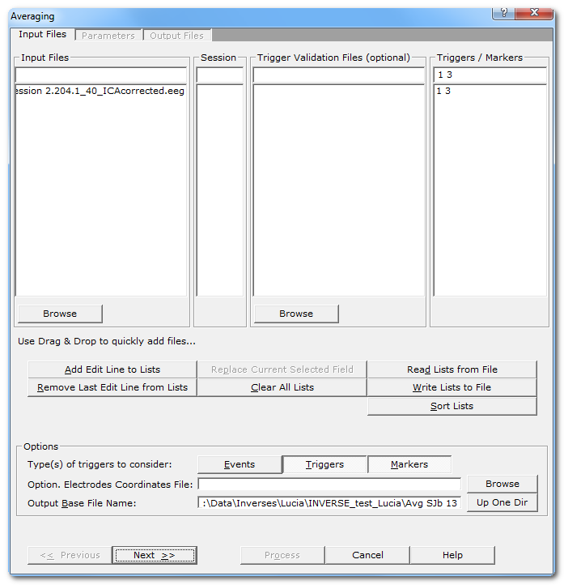
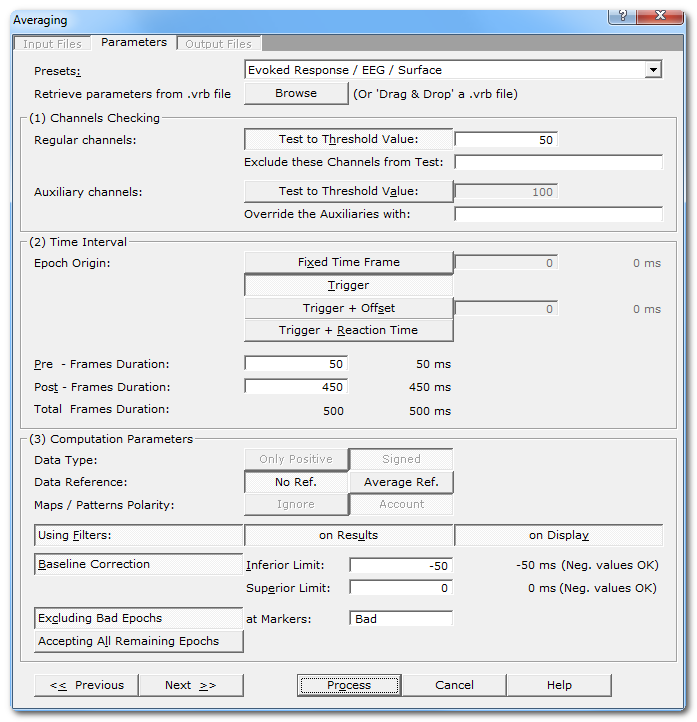
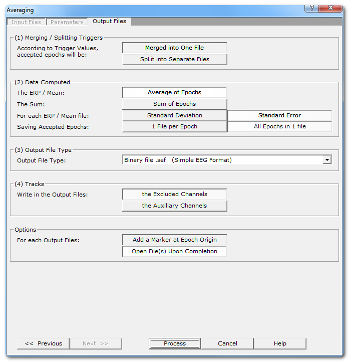
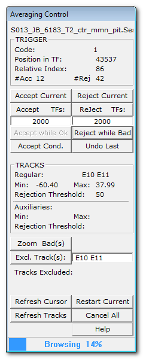
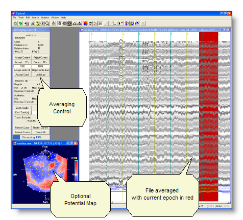
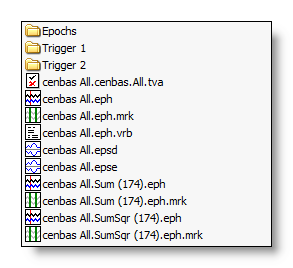
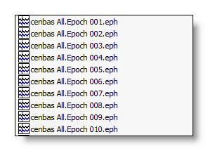
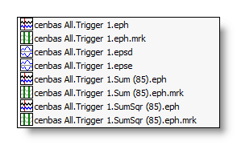

This is a semi-automated tool to average and / or exports epochs from EEG file(s).
The user sets some parameters to control more or less tightly the averaging process, and then has to pilot the averaging (because we want you to have a look to your data!). It is used to compute either ERPs, Grand Means, but also to split a file into epochs .
Files that can be processed could be any Spontaneous EEG recordings or ERPs, but also Frequency transforms or Results of Inverse Solution.
Called from the Tools | Averaging files menu, there are three dialogs for the parameters . Then, when enough parameters are given and after pressing the Process button, the control dialog appears to monitor the averaging process.

|
Input Files |
|
|
Input Files |
A combo-box used to enter which files to average:
Either type or modify the file name in the Edit field, or rather use
the Browse button to select a set of files with a file dialog. |
|
Session |
Specify an optional session number for the next file to be added. Let
it empty if there are no sessions, or if you don't know (though you should!). |
|
Trigger Validation Files (optional) |
An optional .tva file, used to filter out some of the triggers / markers. F.ex. excluding the false responses from an experiment, or if you wish to re-do an averaging and to use exactly the same accepted / rejected triggers. Also available in these files is the Reaction Time, which you can use here in the averaging. |
|
The list of triggers / markers names to be averaged, separated either by a space, a comma or a semicolumn (but please, just use only one type of separator for the sake of clarity!), f.ex.: On Off 1 2 3 4 Trigger names that contain a space should be put between double quotes, f.ex. "eye blink". Wildchars are allowed with the following restrictions:
|
|
|
Use Drag & Drop to quickly add files |
This is only to remind the user of the very convenient Drag & Drop feature . |
|
Add Edit Line from Lists |
When all the edit fields have been filled, and in order to validate them, click on this button to transfer their values into their corresponding list fields (below).
If the Session or Trigger Validation Files edit fields
were left empty, an empty entry is added. After the edit fields have been transfered, they are all cleared for the next input, except the Triggers / Markers edit field, so you can re-use the same triggers again. |
|
Remove Last Edit Line from Lists |
Pops the last added line from the lists back to the edit fields,
either to remove the line, or to modify it and insert it again. |
|
First, click on any item in any of the lists (input files, session,
tva, triggers / markers). Its content will appear in its
corresponding edit field (on top) for you to modify it. This is a very practical way to modify the input lists wihtout having to deconstruct the whole of them (changing only the triggers, the session, or the files...). |
|
|
Clear All Lists |
To clear out all the lists at once. |
|
Read Lists from File |
You can directly add a whole set of files to average, optionally including the session, tva and triggers / markers. Either you constructed these lists yourself beforehand, or they were previously saved by Cartool .
Note that the lists are simply augmented, and not replaced. If you
want to do so, clear them out first. |
|
Write Lists to File |
You can save the current lists into a
file, in case you want to re-use them. |
|
Options |
|
|
Types of triggers to consider |
Cartool currently distinguishes these three types of triggers:
Here you can select which ones (and only these) you want to use in
the averaging. Be aware that not selecting a given type (markers f.ex.) will make all of them invisible during the averaging process! This, however, could be very useful, f.ex. if you have duplicate names between triggers and markers and don't want to mix them. |
|
You can optionally specify the 3D
coordinates
of the electrodes
to see a map
of the current epoch to be averaged. |
|
|
Specify here a basis for all the file names that will be generated during the averaging process. Cartool automatically provides you with a smart base file name that is a compound of the part common to all the files to be averaged (f.ex. "01conditionthis" and "02conditionthat" will give "condition"), added with a list of all the triggers used (f.ex. 1, 2 and 3 will give "123", resulting to the base file name "condition.123"). Well, it's easier to see it in action! You can override the base file name, either to simplify it, to fit it to your own taste, or to avoid overwriting files... |
|
|
<< Previous | Next >> |
Use these buttons to navigate through the previous and next dialogs (if any). See which current dialog you are in, and to which other dialogs you connect, in the tab-like part at the top of the dialog under the title. These buttons are enabled if the parameters of the current dialog are OK . If they don't (not enough informations, inconsistent ones, etc...), or if there is no neighboring dialog to switch to, some of these buttons are disabled. |
|
Process |
This button actually launches the averaging process. This button remains disabled until all the parameter dialogs have received enough (and consistent) informations . If this is not the case, first check the current dialog: if its "Next" button is disabled, the problem is in the current dialog. Otherwise, browse the other dialogs for some missing informations. |
|
Cancel |
Quit the dialog. |
|
Help |
Launch the Help to the right page (should be here...). |
Any EEG files that Cartool recognizes
Before entering more than one EEG file (by Drag & Drop f.ex.), it can be very convenient to enter the triggers / markers code in the edit field. All subsequent EEG file will inherited these informations. Of course, you can later change / edit all these informations .
There is no problem to use the same file many times in a row, usually if it contains multiple sessions. In this case, specify the session number for each input line.
A set of files that can be averaged, they
will be added to the Input Files list (also see
this
point
)
.csv file
.txt text file, with a similar format as the .csv format above, but separators used are tabs instead of commas (then rather a .tsv format).
In any case, spaces are removed and ignored.

|
Parameters |
|
|
Presets: |
This is handy to quickly set the main parameters according to the most frequent uses, listed in the drop-down box. The most important parameters will be set, still some parameters have to be set manually! And, as usual, double check that all your settings make sense... |
|
Retrieve parameters from .vrb file |
Give a .vrb file generated from a previous averaging process, it will be scanned and as much parameters as possible will be retrieved and restored. This facility will work only with .vrb files compatible with this version of Cartool. Anyway, check that the parameters you get are the one you expected! You can also simply Drop the .vrb file into the dialog. |
|
|
|
|
Regular channels: |
The next parameters concern only the EEG channels. |
|
Test to Threshold Value: |
When selected, you have to specify the threshold above which a channel will be considered as bad / corrupted. See channel checking. |
|
Exclude these Channels from Test: |
If you already know what channels were noisy or inactive, you can fill this field to avoid testing them. Still, you can exclude channels later on, during the averaging process. See channel checking. |
|
Auxiliary channels: |
The next parameters concern only the auxiliary channels (ECG, eyes, etc...). |
|
Test to Threshold Value: |
When selected, you have to specify the threshold above which an auxiliary channel will be considered as bad / corrputed. See channel checking. |
|
Override the Auxiliaries with: |
Override the default auxiliary channels. The list you provide will completely supersede the default one. |
|
Time Interval |
|
|
Choose the time origin of the epochs. See length and origin position. |
|
|
Fixed Time Frame |
One and only one TF, at a fixed position. Useful for grand averages. |
|
Trigger |
The triggers / markers (actually, their onset). |
|
Trigger + Offset |
The triggers / markers, plus a given and fixed number of TFs. |
|
Trigger + Reaction Time |
The triggers / markers plus a variable step found in the .tva file (specified in the files dialog). Attention: the steps are in milliseconds, not TFs! |
|
Duration |
The length of the epoch. |
|
Pre-Frames Duration: |
The number of time frames before the origin (positive number, or 0). See length and origin position. |
|
Post-Frames Duration: |
The number of time frames after the origin (positive number, or 0). See length and origin position. |
|
Total Frames Duration: |
The total number of time frames. See length and origin position . Note that the TF values are also converted into milliseconds if a sampling frequency has been found in the files to average. |
|
Computation Parameters |
These parameters are applied according to the following sequence. |
|
Data Type: |
|
|
Only Positive |
Data consist of positive only, scalar data. This could be spikes from neuron recordings, or the Results of Inverse Solution, f.ex. This will logically turn off the Polarity & References options. See this point on positive data and also this point. |
|
Signed |
Signed scalar values, like, you know, EEG. |
|
Data reference |
|
|
No Reference |
Data are used as they come from files, no changes occur. |
|
Average Reference |
Data are average reference-d, can be used for Grand Averages but not necessarily. |
|
Maps / Patterns Polarity: |
|
|
Ignore |
Polarity of maps does not matter, so ignore it. Inverted maps are considered the same (same underlying generators, but with reversed polarity). Used for spontaneous EEG recordings or FFT Approximation . |
|
Account |
Polarity of maps matter, that is, inverted maps are indeed considered as different. Used for ERPs. |
|
Using Filters: |
Clicking on this button brings the usual Filter Dialog . Fill it according to your needs, and specify a sampling frequency if none was found after getting the input files . Clicking on the button again turns the filters off. You can refine on what the filters should be applied to (see the possible combinations): |
|
on Results |
On the outputted data. |
|
on Display |
On the EEG display. |
|
Baseline Correction: |
Check this button if you want to apply some baseline correction (subtracting each track with its average within a given time period). |
|
Inferior Limit: |
Lower boundary as on offset to the epoch origin. Use negative values before the origin, positive values after. |
|
Superior Limit: |
Superior boundary as on offset to the epoch origin. The limits specified need not to be within the range of the Pre and Post-Frames. They can be whatever you wish , Cartool will handle all the cases gracefully. When changing the "Pre-Frames Duration" value, the "Baseline Inferior Limit" will be updated automatically. |
|
Excluding Bad Epochs |
Check this button to allow skipping bad epochs . |
|
at Markers: |
Specify the exact marker names of epochs to be skipped. The markers should have been already set either manually , or by scanning automatically the tracks. Any averaging epoch intersecting with any of these bad markers will be automatically skipped. |
|
Accepting All Remaining Epochs |
Automatically accept all epochs for all files. Any specified thresholding tests will be skipped . However, if Excluding Bad Epochs have been specified, then it will accept only the non-overlapping epochs only. This option is however more useful for Grand Averages, where you just want to sum files you already know and trust. Notice that no TVA file will be outputted, as for Grand Means we don't care... |
|
<< Previous | Next >> |
Use these buttons to navigate through the previous and next dialogs (if any). See which current dialog you are in, and to which other dialogs you connect, in the tab-like part at the top of the dialog under the title. These buttons are enabled if the parameters of the current dialog are OK . If they don't (not enough informations, inconsistent ones, etc...), or if there is no neighboring dialog to switch to, some of these buttons are disabled. |
|
Process |
This button actually launches the averaging process. This button remains disabled until all the parameter dialogs have received enough (and consistent) informations . If this is not the case, first check the current dialog: if its "Next" button is disabled, the problem is in the current dialog. Otherwise, browse the other dialogs for some missing informations. |
|
Cancel |
Quit the dialog. |
|
Help |
Launch the Help to the right page (should be here...). |
Within the current epoch, each channel is tested and if it is above the specified threshold, the channel is marked as Bad (as well as the whole epoch). Otherwise (below the threshold), the channel is considered as Ok.
If both the channel test and the auxiliary test are selected, then the channels are tested against the threshold corresponding to which category they belong to (normal or auxiliary). If any one of the test indicates a channel as Bad, then the epoch is set as Bad. Conversely, both tests must return Ok for the epoch to be considered as Ok.
If no test at all is active, all epochs will be considered as valid.
"Excluded channels" means excluded from the tests (and from the display BTW). Whatever their values, excluded channels will not be tested. You can choose to save or not these channels, according to your needs. And only if the auxiliaires are being tested can you exclude some of them.
The time interval used for testing a given epoch is the following:
It is first set to the whole pre- to post-stimulus interval.
In case the Baseline extends beyond the pre- and post-stimulus interval, the tested interval is extended to the biggest interval that encompasses both the baseline and the pre+post interval .
In case of High-Pass filter, it adds 1/6 of the lowest
wave-length on each side of interval. This is to account for slow waves
that could be just below the threshold at the edge of the epoch.
So
f.ex. with a High-Pass of 1 Hz, the tested interval will be extended by
167ms on the left and on the right.
The override will apply before the channel exclusion and before the tests (channels or auxiliaries), so that the electrodes are compared with their correct thresholds.
A side-effect of the override allows you to specify the computed tracks as auxiliairies, therefore allowing you to also test the dissimilarity, the GFP and the average!
Consider the case where the epoch origin is the trigger onset (usual case). Starting with the simple case where Pre-Frames = 0, and Post-Frames = 250. Always Total-Frames = Pre + Post = 0 + 250 = 250 time frames in the output file. Remember that TFs start counting from 0:
|
Epoch origin |
Last TF of epoch |
||||||
|
Offset in original file, in TF |
0 |
1 |
2 |
. . . . . |
247 |
248 |
249 |
|
Absolute TF position in output file |
0 |
1 |
2 |
. . . . . |
247 |
248 |
249 |
It shows that in the output file, TF 0 is the epoch origin, and TF 249 is the last time frame (Total-Frames - 1).
Now lets have Pre-Frames = 50, Post-Frames = 250, then Total-Frames = Pre + Post = 50 + 250 = 300 time frames in the output file.
|
First TF of epoch |
Epoch origin |
Last TF of epoch |
|||||||
|
Offset in original file, in TF |
-50 |
-49 |
... |
-1 |
0 |
1 |
... |
248 |
249 |
|
Absolute TF position in output file |
0 |
1 |
... |
49 |
50 |
51 |
... |
298 |
299 |
It shows that in the output file, TFs 0 to 49 are before the trigger, that TF 50 is the epoch origin, and that TF 299 is the last TF (corresponding to TF 249 in input file).
Usually, people are filtering the data and want to see the results, so both Data and Display should be selected.
Filtering the Display but not the Data allows you to visually select the epochs in a clean display, still saving the original data (f.ex. preserving all the frequencies).
Filtering the Data but not the Display can speed up things a little, at the risk of confusing you by not understanding why some tracks are not rejected (because they are actually filtered, and the tests apply to the filtered values). Not recommended (unless you really trust the program!).
To cancel filtering, you can either deselect both the Data and Display buttons, or open the Filter Dialog itself and uncheck all filters.
You can specify if you want to apply the filters to the auxiliary tracks from the Filter dialog.
For each TF sequentially, take all the maps for all the epochs and check if they correlate negatively with the map with the highest GFP . Then invert (multiply by -1) these maps before proceeding to the next step of the averaging (usually the summation, saving epoch to file, etc...).
This way, we will sum maps with the same "polarity".
For each epoch, the pre- and post-stimulus interval is inflated by 100 ms on the left and on the right.
Then this interval is tested against each marker which names have been specified. If any of these marker overlap with the inflated epoch, then it is rejected.
Used in conjunction with the Accepting All Epochs, this would average all epochs not intersecting the bad markers.

|
Output Files |
|
|
Choose how to handle the accepted epochs: |
|
|
According to Trigger Values, accepted epochs are: |
|
|
Merged into One File |
All epochs are averaged into a single file, whatever their trigger codes. If there are triggers 1, 2, 3, 4, the result will be a single file that sums all these epochs. |
|
Split into Separate Files |
The epochs are routed to different files according to their trigger codes. Epochs from trigger 1 are summed in their own file, and so on with epochs from triggers 2, 3 and 4. The standard error and standard deviation can also be computed on these files (if these options are selected, of course). You can select both the Merge and the Split options. |
|
|
|
|
Average of Epochs |
Compute and save the average of the accepted epochs. This is usually what you came for! Applies both to the Merged and Split files. |
|
Sum of Epochs |
Compute and save the sum of the accepted epochs. Applies both to the Merged and Split files. Also see this note. |
|
Standard Deviation |
Compute and save the standard deviation of the accepted epochs. Applies both to the Merged and Split files. |
|
Standard Error |
Compute and save the standard error of the accepted epochs. Applies both to the Merged and Split files. |
|
1 File per Epoch |
Save the accepted epochs, each epoch being put into a separate file . This is done only once, and is not relevant if epochs are Merged or Split . A single marker is added for each file, with the trigger code of the current epoch, at the correct pre-stimulus offset. |
|
All Epochs in 1 File |
Save the accepted epochs, pasting them one after the other into a single file . Two types of markers are generated:
This is done only once, it does not matter if epochs are Merged or Split . |
|
Preset list for you to select the file type used for all the output data. |
|
|
Tracks |
|
|
Write in the Ouput Files: |
|
|
the Excluded Channels |
Select this if the excluded channels are to be written to the output files anyway. In this way, you can assure you get the expected number of tracks (though the exluded will certainly look noisy). |
|
the Auxiliary Channels |
Select this if the auxiliary channels are to be written to the output files. |
|
Options |
|
|
For each Ouput Files: |
|
|
Add a Marker at Epoch Origin |
To help visualize the epoch origin, select this to conveniently add a marker on (most of) the outputed files. It does nothing if there are no Pre-Frames, as the first TF is the epoch origin (see length and origin position ). See how the epoch origin is rendered in the EEG display . |
|
Open File(s) Upon Completion |
To automatically open the main resulting files. |
|
<< Previous | Next >> |
Use these buttons to navigate through the previous and next dialogs (if any). See which current dialog you are in, and to which other dialogs you connect, in the tab-like part at the top of the dialog under the title. These buttons are enabled if the parameters of the current dialog are OK . If they don't (not enough informations, inconsistent ones, etc...), or if there is no neighboring dialog to switch to, some of these buttons are disabled. |
|
Process |
This button actually launches the averaging process. This button remains disabled until all the parameter dialogs have received enough (and consistent) informations . If this is not the case, first check the current dialog: if its "Next" button is disabled, the problem is in the current dialog. Otherwise, browse the other dialogs for some missing informations. |
|
Cancel |
Quit the dialog (although it will be sad...). |
|
Help |
Launch the Help to the right page (should be here...). |
This is quite simple, let's have a well designed experiment with 4 triggers, each of them being already something testable (say, a condition).
By splitting triggers, you can create 4 different set of files, one set for each trigger. In this set you can choose to put either the average, the SD, the SE and the sum (of all accepted epochs of a given trigger type).
Now, you can directly compare condition 1 and condition 2, you are already done with the right files, including the SD / SE.
You can also very easily compare conditions 1+2 against conditions 3+4, f.ex.: just add together the Sum files (not the average!) of conditions 1 and 2, then 3 and 4. Divide the new 1+2 and 3+4 files by their corresponding number of summed epochs, and there you are with your averages of conditions 1+2, and 3+4.
You can repeat in all the manners you like this joining of splitted triggers, and never have to do again the whole lengthy and straining Averaging process.
The input and output files need not to be of the same type.
Therefore, it's up to you to set the output file type according to your practical needs. The prefered choice of output is usually the same as the input one, or .eph or .ep text files. But you can average .ris binary files and output .eph text files, or averaging .eph text files binary files and outputting .ris binary files.
If the output file type still does not fit you, you can still convert them .
Also note that when averaging Frequency files, the output type is always .freq.
Once all the parameters have been entered, the control dialog appears. It is updated in real-time with the current state of the EEG, and waits for some user choice (see Operating the averaging process):

|
Averaging Control |
|
|
|
On top of the window, you find the name of the current file. |
|
TRIGGER |
Informations related to the current trigger. |
|
Code |
The current trigger / marker code. |
|
Position in TF |
The epoch origin of the current trigger, in time frame. |
|
Relative Index |
Just to indicate the position order of the current trigger. |
|
#Acc |
Number of accepted triggers until now. |
|
#Rej |
Number of rejected triggers until now. |
|
Accept the current epoch. |
|
|
Reject Current |
Reject the current epoch. |
|
Accept all epochs for the period of time specified in the edit field below (in TF). Default range is set to 2s. The time interval starts from the current epoch origin. Forthcoming epochs are accepted if their origins stand within that interval. |
|
|
Reject TFs |
Reject all epochs for the period of time specified in the edit field below (in TF). Default range is set to 2s. The time interval starts from the current epoch origin. Forthcoming epochs are rejected if their origins stand within that interval. |
|
Accept all the valid epochs, starting from the current one, until it stumbles upon a bad epoch (if any) and stops there. If the current epoch is a bad one, the button is off. |
|
|
Reject while Bad |
Reject all the bad epochs, starting from the current one, until it finds a valid epoch (if any) and stops there. If the current epoch is a valid one, the button is off. |
|
This will conditionally accept all the remaining epochs, including the current one. "Conditionally" means that each epoch will be accepted only if all tests are Ok, and rejected otherwise. When you press this button, it will run until the end of file (subsequently closing it), so there is no more chance for you to interact with the control dialog! |
|
|
Undo the choice made on the last epoch, which means:
By pressing many times this button, you can even rewind to the very first epoch that was presented to you upon the file opening (only for the current file, though). Even if the user accepted / rejected a whole bunch of epochs at a time (Accept / Reject TFs, or Accept / Rreject while ...), each single epoch can be individually undone. Accepting, rejecting and undoing any number of times does not alter the precision of the computations. |
|
|
TRACKS |
Informations about tracks within the current epoch. |
|
Regular |
If the regular tracks test has been selected, it shows which one are concerned with the Min and Max values displayed below. It can either display "ALL", if all the regular tracks are Ok (below the threshold). Or it can display the list of regular tracks that are off the threshold. |
|
Min |
Min value of all the regular tracks listed in the field above. |
|
Max |
Max value of all the regular tracks listed in the field above. |
|
Rejection Threshold |
For the regular tracks, only. |
|
Auxiliaries |
If the auxiliray tracks test has been selected, it shows which one are concerned with the Min and Max values displayed below. It can either display "ALL", if all the regular tracks are Ok (below the threshold). Or it can display the list of regular tracks that are off the threshold. |
|
Min |
Min value of all the auxiliary tracks listed in the field above. |
|
Max |
Max value of all the auxiliary tracks listed in the field above. |
|
Rejection Threshold |
For the auxiliary tracks, only. |
|
|
|
|
Zoom Bad(s) |
When activated, if the current epoch has some bad channels (always drawn in magenta), they will be the only one shown on display. Therefore you can have a better view and an easier choice (hopefully). If none of the channels are bad, the button has no effect and all the non-excluded tracks are shown. You can press anytime on this button to focus or not on the bad channels. If the button is off, the tracks on display will not change, whatever if they are bad or not. |
|
Press this button to exclude the tracks listed in the edit field on the right. The edit field is automatically filled with the bad tracks, the ones that failed the tests (the magenta-colorized tracks on the EEG display). However, you can manually modify this list in the edit field, removing and / or adding some tracks. Or if the user directly selects / deselects tracks on the EEG display, the list will be updated accordingly in real-time. The modified list will be the one to be actually excluded. |
|
|
Tracks Excluded: |
The list of the currently excluded channels. |
|
|
|
|
Refresh Cursor |
During normal operation, the cursor is used to represent the current epoch. It could happen, though, that its position be modified by the user. Clicking Refresh Cursor will re-position it correctly. |
|
Refresh Tracks |
During normal operation, the tracks displayed are the one that are not excluded. But you can still browse your data and change which tracks are on display. Clicking on Refresh Tracks will bring back the "good" tracks and remove the "bad" ones. Note that on the next epoch, Cartool will refresh the tracks anyway... If the auxiliaries are not tested, the user can freely show or hide them. The user's choice will then remain valid for all epochs. |
|
Restart Current |
Cancel only the current file operations, and restart from the file beginning. Of course, all the choices made on this file will be lost! This is equivalent to undoing everything. |
|
Cancel All |
Cancel the whole averaging process. No undo, but it will ask for a confirmation before (see how I care for you?). |
|
The progress bar at the bottom indicates the current epoch's position within the file. It also indicates either "Browsing" if you are currently in the accept / reject stage, or "Computing" in the computation stage itself. |
Select the files to be processed
Set all the parameters
Then work sequentially on each selected file / session. You get this kind of display:
the EEG display on the right side,

The control is first in Browsing mode, which means you will go through all the epochs, and choose which ones will be good enough to be kept in the calculus.
The current epoch is shown with the red cursor in the EEG display. Previous epochs are labelled with a marker, stating if they were accepted or rejected. The current epoch is also labelled, but with the result of the tests, either with "OK?" or with "BAD?".
Check the current trigger informations shown in the TRIGGER box of the control dialog
Check the tracks informations shown in the TRACKS box of the control dialog
You are prompted for a choice, depending on what you see (and know...), you may:
Exclude some tracks that are definetely bad, restarting from the file beginning.
Reject the current epoch only, or epochs for a given interval , or reject until the tracks are tested as Ok .
Accept the current epoch only, or epochs for a given interval , or accept until the tracks are tested as Bad .
Accept / reject conditionally until the end of the current file, in a semi-automated way.
Undo the last step that was done, so you can change your mind (accept a previously rejected epoch, or the other way round).
When the last epoch has been processed, you automatically quit the Browsing mode and enter the Computing mode. Only then the real computations take place. Note that there is no possible interaction with the user during this stage.
The current file is then closed, and the whole process is done again for the next file. Otherwise, the last dialog closes, and optionally some of the files produced are opened. The process ends here.
This is a very important and key feature to understand. The tva files allows you to do the following things:
Tva files coming from the stimulation machine will allow you to automatically reject all epochs where the subject answers were wrong.
They will also make possible to compute the epoch origin as the reaction time from the trigger.
Tva files generated by earlier Cartool Averaging Process will allow you to re-do exactly the same computation (more precisely, to use exactly the same epochs). Use it if you want to double check your computations, or if you changed your mind and decided to modify some parameters and see how the results differ...
When Tva files are used, they are first scanned and all the wrong epochs are labelled as "TVA REJECTED" in the EEG display.
The wrong epochs can not be accessed at all, even the Undo procedure will not work on them. They are definitively discarded.
Averaging by using markers instead of triggers allows you to do any processing you like. Typical uses would be:
Create the markers (in a mrk file) with a program of your own.
Copy the triggers into markers, edit and save them.
Most of the parameters and actions in all the dialogs have a keyboard shortcut that highlights when holding the Alt key. Using the keyboard will save a lot of time and reduce tensions in the arm and in the hand!
Well, the averaging process can generate quite a lot of files, so files are named according to the following conventions, and sorted in a hierarchy of directories.
This should be quite intuitive to use, but if you need to figure out all the details, read below:
All files will begin with the Output Base File Name , f.ex. Base
Next, split trigger files (if any) will contain the name Trigger followed by each of the actual triggers name, f.ex. Base.Trigger 1
Next, summed files (if any) will contain either one of these names: Sum (number) or SumSqr (number)
The number being the number of epochs actually summed up in the file, f.ex. Base.Sum (54) and Base.Trigger 1.Sum (28)
(the average files themselves don't have anything inserted in this step).
Epochs files (if any) will have the name Epoch <number> or Epochs directly inserted following the Base File Name.
F.ex. Base.Epoch 001, Base.Epoch 002, Base.Epoch 003 or Base.Epochs
Finally, according to which file is outputted, the following file extensions are appended:
The averaged / summed files have the extension specified in the parameters: .ep, .eph or .ris
F.ex. Base.eph, Base.Sum (54).eph, Base.Epoch 001.eph or Base.Trigger 1.eph
The verbose file with a summary of all the parameters used have the extension: .vrb
F.ex. Base.eph.vrb
The Trigger Validation with a list of all accepted and rejected triggers have the extension: .tva
F.ex. Base.tva
The (optional) standard deviation / error files have the extensions: .epsd or .epse
F.ex. Base.epse or Base.Trigger 1.epse
The (optional) marker files with epoch origin and / or epochs beginning have extensions: .mrk
F.ex. Base.eph.mrk, Base.Sum (54).eph.mrk, Base.Epochs.eph.mrk or Base.Trigger 1.eph.mrk
A root directory is created with the Output Base File Name , which will hold:
A sub-directory (of the root directory) named Epochs will hold the saved epochs (if any).
A set of sub-directories (of the root directory) named Trigger <trigger name> will hold the split triggers files (if any).
See here an example of the directory structure and file naming:
|
Root directory: |
 |
|
Epochs sub-directory: |
 |
|
Trigger 1 sub-directory: |
 |
The verbose file .vrb is a very important one , first to know how you computed your stuff, and secondly to automatically set the averaging parameters , should you re-do your averaging. So don't lose it!
Both the merged and the split triggers files will have their own Standard Deviation / Error (if this was requested in the parameters).
When re-doing a computation with a Base File Name previously used, all the old files with be deleted (without prompting). Sorry about this "tough love", but it is even more dangerous to let old and new computation results live together, as you will certainly, and involuntarily, mix them at some point.
Though, the safety is: Cartool will only erase the files it created, those who start with the specified Base File Name. If you really want to keep old stuff, either rename the files you want to keep, or, even simpler, just use another Base File Name!
If you haven't understood yet, choosing a good Base File Name is the key to clarity and safety for your data: short but meaningful, and not reusing an old one.